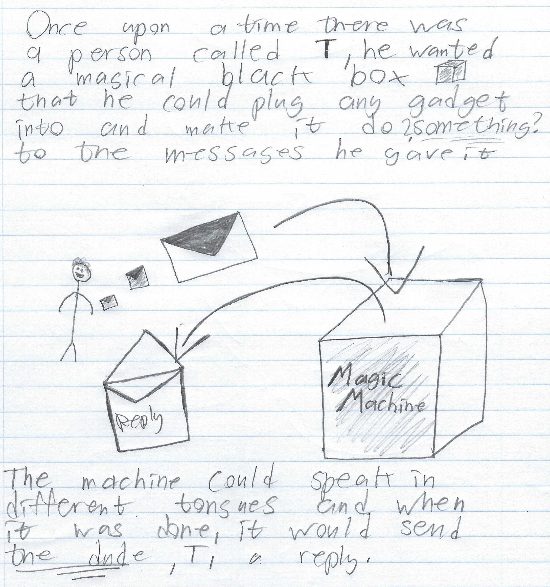
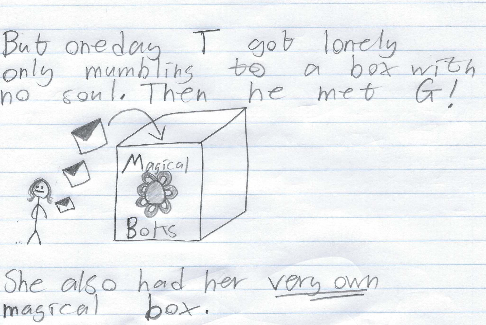
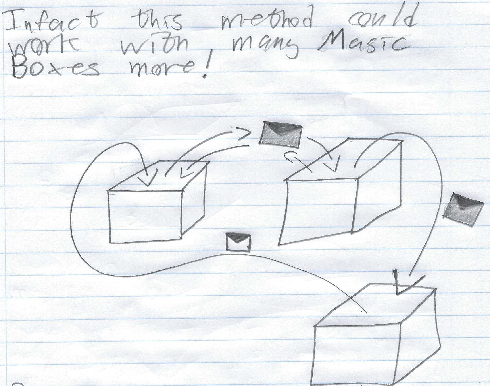
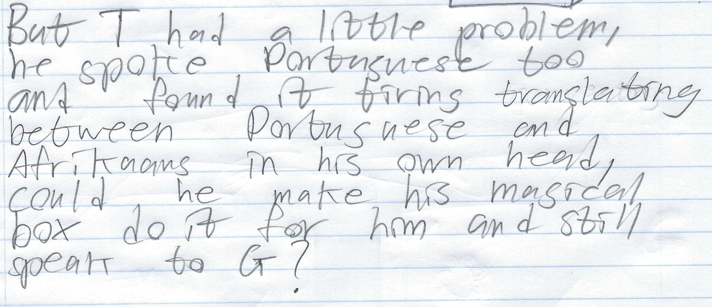
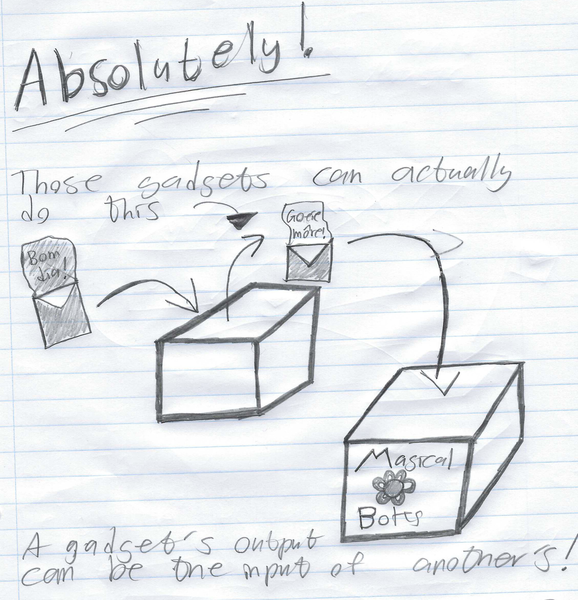
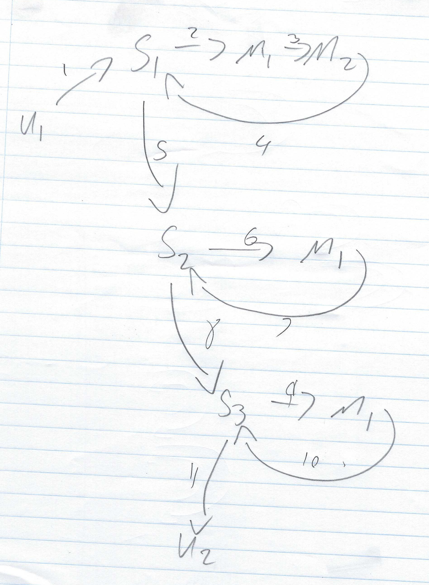

Tristan B. Kildaire
"My brain is big but I still failed Applied 144 for the
second time" ~Deavmi 2020
Bester: A pluggable message-exchange protocol (Part 2)
1st May 2020
Introduction
So, you've probably seen the previous blog posts and now have seen
that both sendClients and sendServers have been implemented. This
post aims to re-iterate those features but with the addition of
sendHandler which has been added as well. Things are still rough
but I have been able to test it out with
sendClients+sendServers+sendHandler all in one setup and it did
work. The example I share today is possible but of course requires
quite some setup and many.... many handlers. But without further
a-do, let's take a look at an example to explain the system again
and then later the real world example I actually deployed.
A worked example to explain it (again)
So we start off with the familiar characters again, the Bester
gang, no wait... maybe just "the squad". There's a guy, he
had something to say and he wants to say it, let's call him T.
In the Bester sense he (T) is a client to a Bester server.
Depicted below is T with an envelope with his message he
wants to send. The server is the box labeled Magic Machine.

He wants to send a message that speaks in a tongue,
the Bester version of this is a message-type or sub-protocol.
Luckily his server, the Magic Machine, has a gadget
which is another word for a message handler, of the specific tongue
(sub-protocol) that the message is encoded in and sendClients is
being used here for the reply of the message handler to be routed
back to the client, T.
All T has to do is send it to the Magic Machine, get a
reply and there you go! But after sometime he got lonely speaking
just to himself, so he decided to say hello to his friend G
but sadly it was lockdown and T was a law-abiding citizen
and adhered to the curfew so they decided to meet virtually.

G was in the same position, she was talking
to her own Magical Boks, so if both of them were then
what's to stop them from just connecting the two together? Surely
all the gadgets in her boks will work with those
in T's? As exciting as this situation was, this was a
stumbling block. You see T had gadgets that only spoke
English (an example sub-protocol) and G had gadgets (in
her boks) that only spoke Afrikaans (an example of a
sub-protocol, again).
How could they fix this? Simple, they forgot they they once
exchanged copies of their gadgets before because they knew
multilingualism was important. All they had to do was to make sure
to both have an English and an Afrikaans gadget (message handler)
installed in their boxes (servers). This meant that they could
exchange both messages in English and Afrikaans, or selectively
one or the other if they decided to only attach the Afrikaans
gadget.
Quick aside, so far we have two servers that can interact with
each other with two possible protocols, either both matching
"English" or both matching "Afrikaans" (the possible message types
and their associated handlers are what we have been calling
gadgets).
This is fantastic, they can now communicate!
Infact, you could do crazy stuff like this even (server-to-server,
via the sendServers command):

This was really great for the two of them, friends re-united.
However, sometimes T wanted to be able to just, you know,
speak in the language of a once world-empire, Portuguese! However,
G didn't have the gadget you needed to understand such
messages and she didn't want to purchase it either as none of her
friends, except T, spoke Portuguese (how sad). T
knew this but he also knew that he could translate the messages on
his side (the client translating a message from a type not
supported by the server to one that is supported and then
only sending it), but he knew this was tiresome and if his box is
to be all magical and all then surely it could provide such a
feature and T knew he could afford a Portuguese gadget.

T found out that if he added his Portuguese gadget to his
magical machine that he could make it work in a way that when a
Portuguese-tongued message came in, that gadget (handler), would
redirect it's translated message to the English gadget (also a
handler) which would then send it to G's boks.
This, in the Bester sense, is making use of the sendHandler
command, and then the sendServers command.

This is the power of Bester, servers connecting to servers with
very little clue what the messages they transfer entail but just
an understanding of where to send the message-handler's replies
to. With such a system you can write sub-protocols ontop of it to
make it do whatever you want. Perhaps a chat protocol, maybe
e-mail, maybe something that updates you on the status of your
Internet-connected kitchen. Instead of you having to write your
own protocol fully - in the sense that you must deal with basic
authentication and server-to-server sockets and client-to-server
sockets and handler sockets. You just have to construct JSON
correctly, that's all I ask of you, and a little 4 byte size
header (in little endian).
My actual deployment
Sadly in this world I will first need to write a few handlers and
clean up the server's code before I can convince G to use
Bester but as for myself and testing the software goes I was able
to construct a topology as shown below.

What you see here is a user U1 connected
to a server S1 who (U1) then sends a message of type M1
to the server S1. This is then processed by the message
handler for type M1, M1. M1 decides to not
use sendClients or sendServers as part of its response message
back to the server S1 but rather (although not depicted)
sends its reply back to S1 with the command sendHandler
(stating to send it to M2), finally M2 sends a
reply back to the server with command sendServers specifying to
send it to server S2.
Server S2 gets the message which has message-type M1,
therefore the message handler M1 will take the message and
generate a reply and send it back to the server S2 but
with the command sendServers specifying to send the reply to
server S3.
Server S3 gets the reply, the message is of type M1,
it sends it to M1, M1 replies back to S3
with its reply and the command sendClients specifying to send the
reply to the client (locally attached only) U2.